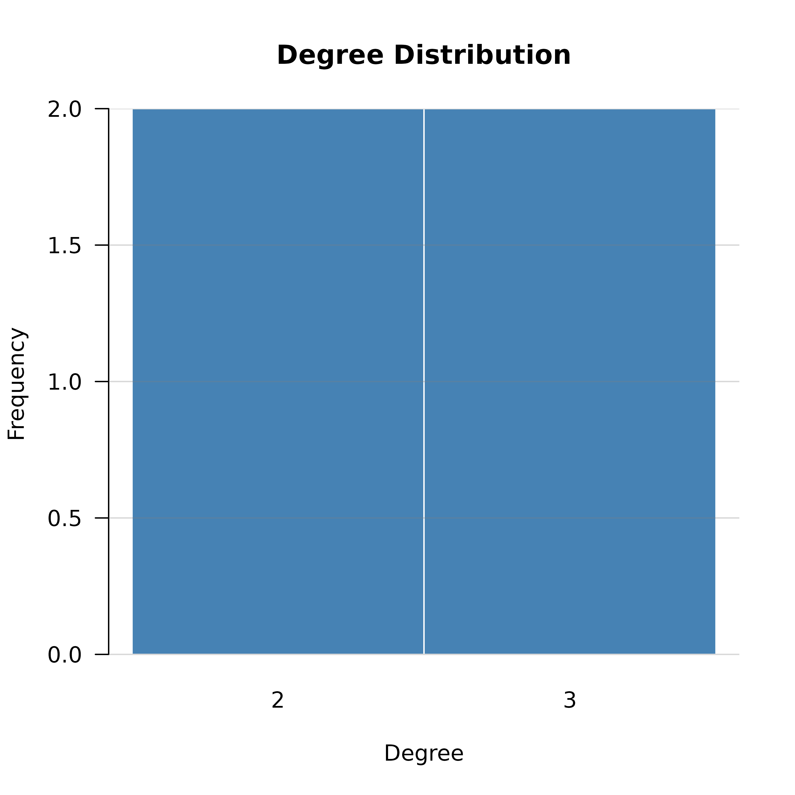
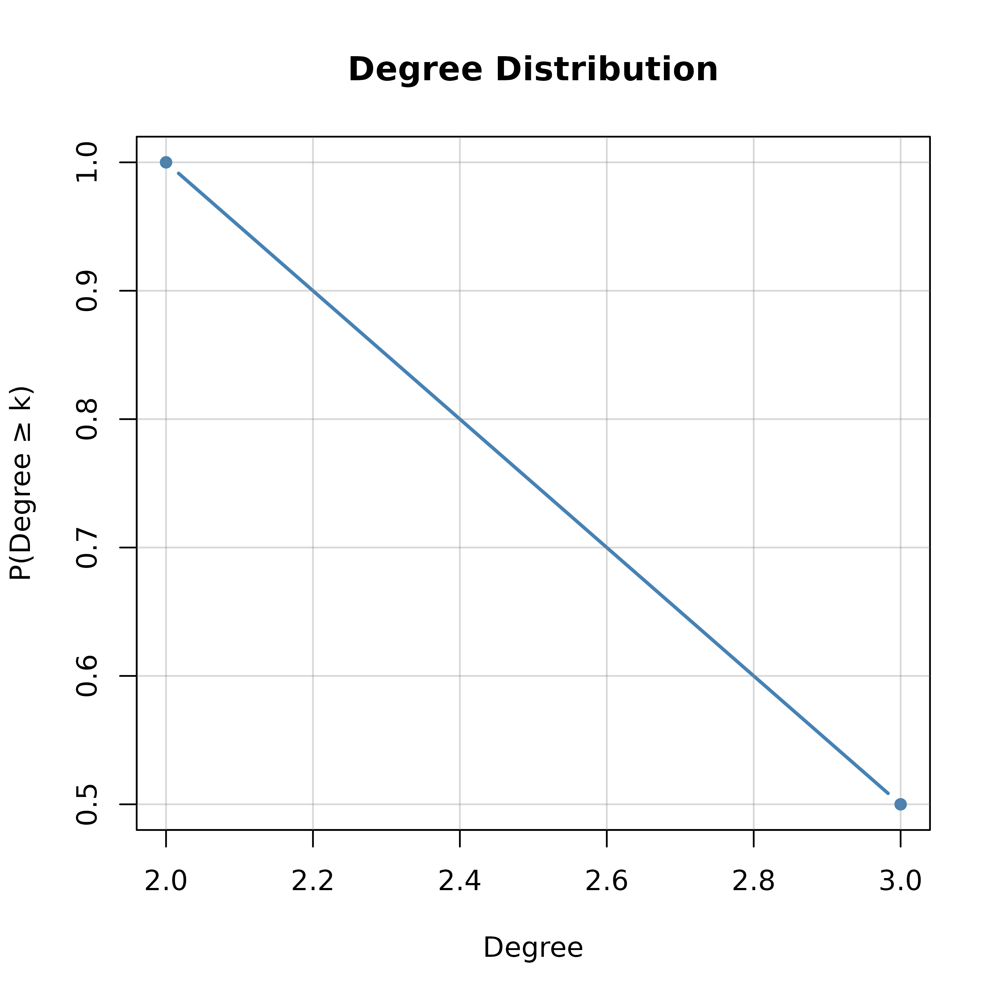
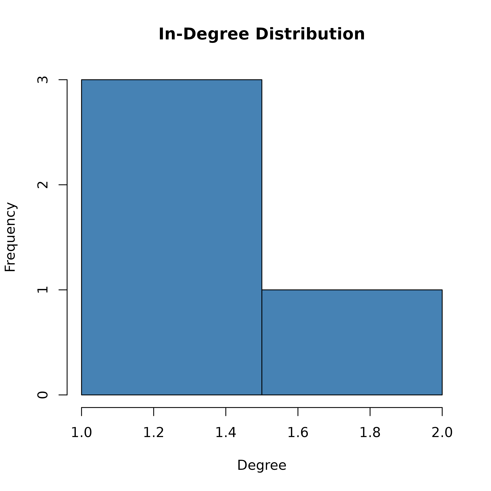

Creates a histogram or cumulative distribution plot of node degrees. By default, bins are integer-aligned (one bar per degree value) so each bar maps to an exact degree.
Usage
degree_distribution(
x,
mode = "all",
directed = NULL,
loops = TRUE,
simplify = "sum",
cumulative = FALSE,
breaks = NULL,
bins = NULL,
bin_width = NULL,
normalize = FALSE,
log = "",
main = "Degree Distribution",
xlab = "Degree",
ylab = NULL,
col = "steelblue",
border = "white",
...
)Arguments
- x
Network input: matrix, igraph, network, cograph_network, or tna object.
- mode
For directed networks: "all", "in", or "out". Default "all".
- directed
Logical or NULL. If NULL (default), auto-detect from matrix symmetry. Set TRUE to force directed, FALSE to force undirected.
- loops
Logical. If TRUE (default), keep self-loops. Set FALSE to remove them.
- simplify
How to combine multiple edges between the same node pair. Options: "sum" (default), "mean", "max", "min", or FALSE/"none" to keep multiple edges.
- cumulative
Logical. If TRUE, show CCDF (complementary cumulative distribution: P(degree >= k)) instead of frequency. Default FALSE.
- breaks
Bin specification passed to
hist. Can be a numeric vector of breakpoints, a single number giving the number of bins, or a character string naming an algorithm (e.g. "Sturges", "FD", "scott"). Overridesbinsandbin_width. Default NULL (auto-detect).- bins
Integer. Approximate number of bins. Overrides
bin_width. Default NULL.- bin_width
Numeric. Width of each bin. Default NULL (auto: 1 when the degree range is \(\le 50\), otherwise Freedman-Diaconis).
- normalize
Logical. If TRUE, the y-axis shows proportions (bars sum to 1) instead of counts. Default FALSE.
- log
Character. Axis log-scaling: "" (none, default), "x", "y", or "xy". Histogram plots apply y-axis log scaling for "y" or "xy"; cumulative plots support x, y, and xy scaling, with "xy" producing a log-log CCDF (standard for power-law inspection).
- main
Character. Plot title. Default "Degree Distribution".
- xlab
Character. X-axis label. Default "Degree".
- ylab
Character. Y-axis label. Default auto-chosen based on
normalizeandcumulative.- col
Character. Bar/line fill color. Default "steelblue".
- border
Character. Bar border color. Default "white".
- ...
Additional graphical arguments passed to
barplot(histogram) orplot(cumulative).
Value
Invisibly returns a list with components:
- degree
Named numeric vector of per-node degrees.
- table
Table of degree frequencies.
- breaks
Breakpoints used for the histogram (non-cumulative only).
- counts
Bin counts (non-cumulative only).
- proportions
Bin proportions (non-cumulative only).
Examples
# Undirected network
adj <- matrix(c(0, 1, 1, 0, 1, 0, 1, 1,
1, 1, 0, 1, 0, 1, 1, 0), 4, 4, byrow = TRUE)
cograph::degree_distribution(adj)

cograph::degree_distribution(adj, cumulative = TRUE)

# Directed network, in-degree
directed_adj <- matrix(c(0, 1, 0, 0, 0, 0, 1, 0,
1, 0, 0, 1, 0, 1, 0, 0), 4, 4, byrow = TRUE)
cograph::degree_distribution(directed_adj, mode = "in")
